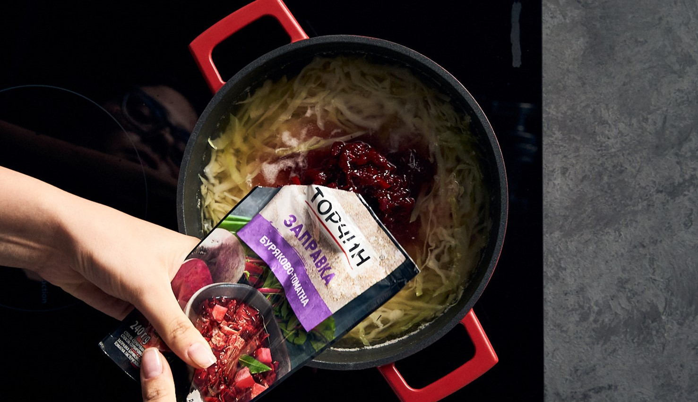

Рецепт приготування борщу
Смачний, ароматний й простий в приготуванні рецепт борщу з ребрами та буряково-томатною заправкою створений для
справжніх поціновувачів класики. Адже борщ з ребрами це, мабуть, найпопулярніший та найавтентичніший серед усіх
рецептів борщу, що так нагадує смак рідного дому.
Iнгредієнти:
- заправка буряково-томатна
- картопля – 4 шт.;
- свинячі ребра – 210 г;
- капуста 1\2 качана;
- вода – 2,5 л;
- зелень за смаком.
Cпосіб приготування:
- Перед тим, як почати готувати борщ з реберцями необхідно підготувати усі інгредієнти: спочатку треба
ретельно промити та нарізати м'ясо, нарізати кубиками картоплю, нашинкувати капусту.
- До 2,5 літрів води додати свині реберця та довести до кипіння. В киплячу воду висипати нарізану кубиками
картоплю й варити до готовності.
- Після чого додати капусту й дати їй проваритись 3-4 хвилини. За тим додати буряково-томатну заправку
“Торчин”, ретельно перемішати й залишити прорватись ще на 2 хвилини. 
- Класичний, смачний та ароматний борщ з ребрами готовий до подачі. За бажанням до борщу можна додати сметану
та прикрасити зеленню.
| Список страв |
Кількість калорій |
Час приготування |
| Борщ |
57.7ккал / 100г. |
~2,5год. |
| Плов |
290ккал / 100г. |
~1,5год. |
| Бограч |
115ккал / 100г. |
~1,5год. |
Плов